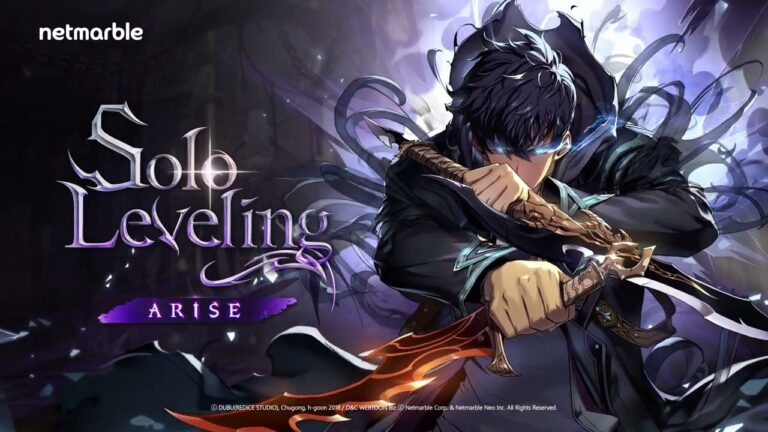
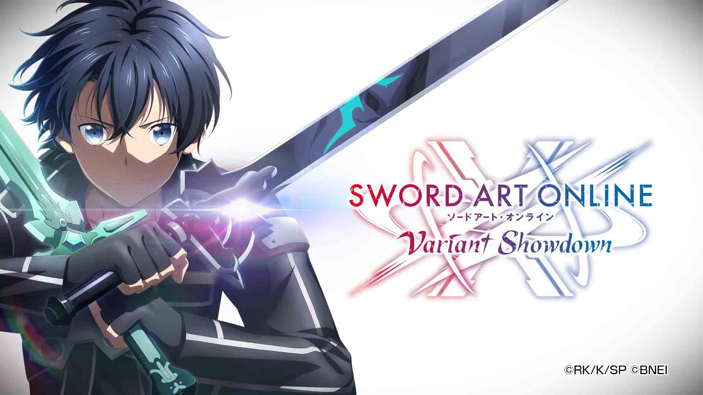
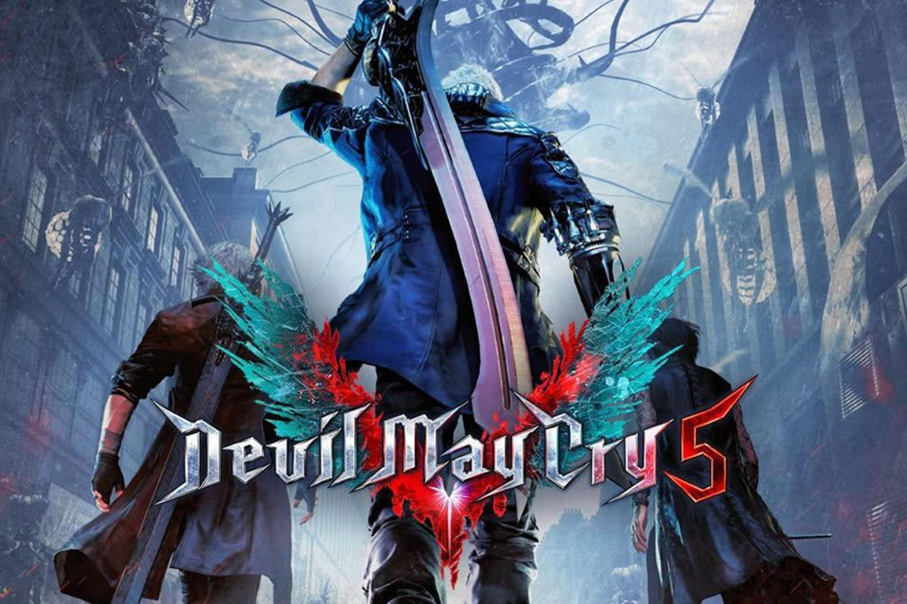
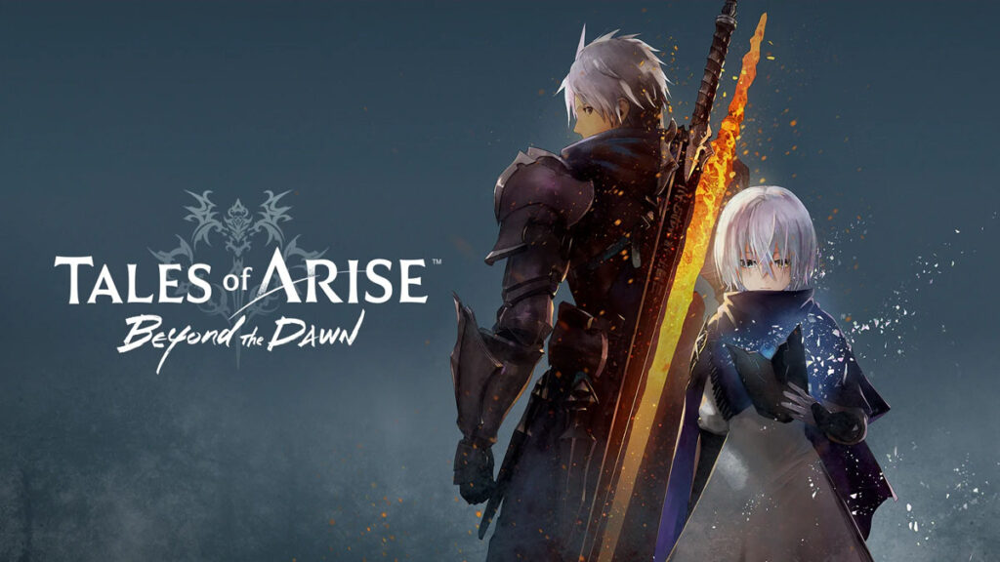
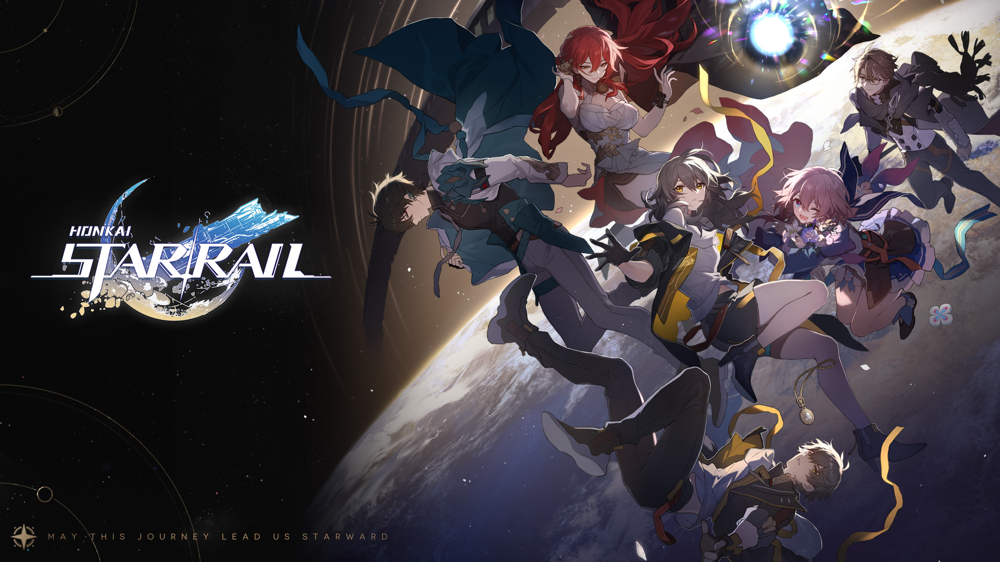
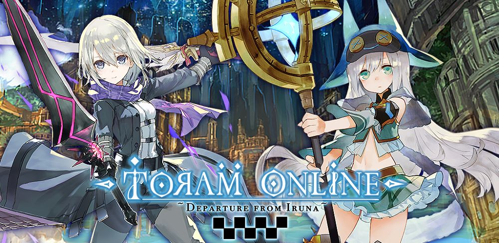

Rekomendasi game RPG terbaik yang bisa kamu coba
RPG (Role-Playing Game) yaitu jenis permainan video yang memungkinkan pemain untuk mengambil peran karakter fiktif dan memainkan perannya dalam sebuah lingkungan yang kompleks. Dalam game RPG, pemain sering memiliki kontrol penuh atas pengembangan karakter, termasuk atribut, keterampilan, dan keputusan cerita. Biasanya, game RPG menampilkan unsur-unsur seperti sistem pertarungan, dialog yang berkembang, dan sistem pengambilan keputusan yang memiliki dampak pada cerita. Selain itu, game RPG sering kali memiliki lingkungan dunia terbuka yang besar dan mengharuskan pemain untuk menyelesaikan serangkaian misi atau tugas untuk melanjutkan cerita utama. Beberapa contoh game RPG yang populer termasuk seri Final Fantasy, The Elder Scrolls, Diablo, World of Warcraft, dan banyak lagi.
inilah rekomendsi game RPG
1.Gensin Impact
.jpg)
Genshin Impact merupakan action RPG yang dibuat dan dipublikasikan oleh pengembang game asal China, Mihoyo. Game ini dapat dimainkan secara gratis alias free-to-play dengan gaya monetisasi gacha. Game dengan mekanisme gacha memungkinkan pemain membeli beragam barang virtual. Dalam hal ini, yang ditawarkan dalam Genshin Impact antara lain, karakter, senjata, dan sumber daya langka lainnya.
2.Solo Leveling:ARISE
Solo Leveling Arise merupakan sebuah game action RPG di mana pemain akan mengendalikan Sung Jin woo, seorang hunter yang awalnya lemah namun akan semakin kuat seiring perkembangannya. Pemain juga dapat memainkan karakter lain untuk melawan invasi monster. Selain mengalahkan musuh sebagai gameplay inti, terdapat juga aktivitas lain dalam game ini. Dalam artikel ini, Dafunda akan memberikan panduan atau guide cara main Solo Leveling Arise khusus untuk pemula.
3.SAO
Game Sword Art Online terbaru! Kali ini, protagonisnya adalah... kamu! Anda muncul di RPG online ini sebagai anggota Tim Penyerang, bekerja sama dengan pemain lain yang dipenjara untuk mencapai lantai 100 Aincrad! Bagaimana jika Anda terjebak dalam permainan hidup atau mati? Anda dapat mengalami pertemuan dengan karakter yang sudah dikenal dan terhubung ke cerita asli SAO dari POV Anda sendiri. Rasakan cerita di balik layar yang tidak terlihat di SAO asli, dan perkembangan cerita yang sangat berbeda! Jalani kisah "bagaimana-jika" di mana Anda memengaruhi Aincrad! Sistem Pertempuran Bertarunglah melalui ladang Aincrad yang luas dengan rekan Anda Koharu, terjebak bersama dalam permainan hidup dan mati! Anda harus bekerja sama dengan Tim Assault di seluruh negeri dan bertempur bersama untuk mengalahkan monster yang kuat dan misi yang sulit! Menempa senjata yang lebih kuat, menggunakan keterampilan dengan semua jenis efek, dan mempersiapkan titik lemah dan pola serangan setiap musuh adalah kunci kesuksesan Anda!
4.Devil May cry
Devil May Cry: Peak of Combat adalah gim ponsel Devil May Cry berlisensi resmi yang dikembangkan oleh NebulaJoy dengan supervisi dari tim resmi Devil May Cry dari CAPCOM! Gim ini melanjutkan fleksibilitas bermain, perpaduan skill dari keterampilan dan strategi, serta gaya bertarung yang indah dan bebas dari Devil May Cry. Selain itu, teknologi penangkapan gerak yang paling mutakhir juga digunakan untuk menghadirkan pengalaman yang paling realistis dan mewujudkan teknik-teknik bertarung khas Devil May Cry dengan sempurna agar dapat memberikan pengalaman bermain yang lebih beragam.
5.Tales of Arise: Beyond The Dawn
Tales of Arise adalah game role-playing aksi tahun 2021 yang dikembangkan dan diterbitkan oleh Bandai Namco Entertainment. Entri utama ketujuh belas dalam seri Tales, permainan mengikuti seorang pria dan seorang wanita dari dunia yang berlawanan dari Dahna dan Rena dan perjalanan mereka untuk mengakhiri penindasan Renans terhadap orang-orang Dahnan.
6.Honkai Star Rail
Tentang game ini "Honkai: Star Rail" adalah game RPG Fantasi Luar Angkasa terbaru dari HoYoverse Di game ini, pemain akan menaiki "Astral Express" dan menyaksikan keindahan galaksi yang ajaib dan fantastis, serta melakukan petualangan yang seru dan mendebarkan. Pemain akan bertemu dengan rekan-rekan baru dari berbagai dunia dan juga wajah-wajah yang familier. Bersama dengan mereka, pemain akan menyelesaikan masalah yang disebabkan oleh "Stellaron" serta mengungkap misteri yang ada di baliknya! Semoga perjalanan ini membawa kita menuju bintang-bintang!
7.Toram online
MMORPG populer yang diunduh lebih dari 14 juta kali secara global! Bebas Buat Karakter! Mainkan kreasimu dan buat karakter sesukamu dengan lebih dari 500 miliar kombinasi yang ada! Kreasikan juga Pedang & Sihir sesukamu! Sistem "profesi" yang pada umumnya terdapat pada MMORPG sudah ditiadakan. Entah itu pedang, tongkat (sihir), busur, maupun tombak, kamu bebas memilih senjata dan menentukan gaya bertarungmu sendiri!
game di atas adalah game rpg yang di rekomendasikan untuki kalian!
ini adalah web yang saya buat untuk tugas terakhir